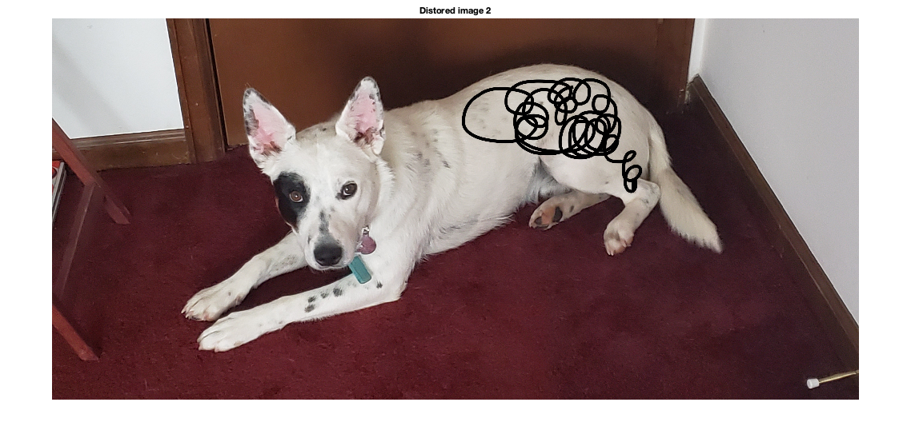
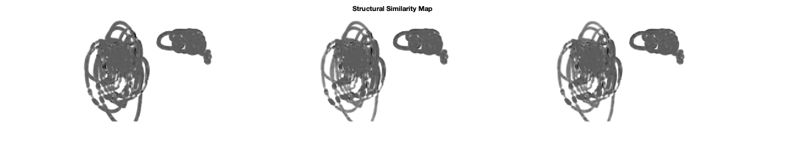
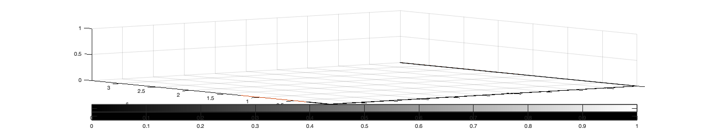

Contents
Assignment 5 by Matt Hurt
The purpose of this program is to measure the image quality with different distortions using different quality metrics. I am using an input image that I took of my dog Kona and used a maker tool in preview to distort the images from the original. The quality of the distortion images is measured with the MSE, PSNR, SSIM functions that were provided in hint code. Then, I obtained a quality metric from mathworks.com by the author Athi Narayanan for a quality metric. To evaluate the performance of the focus measures, existing methods were selected from different families. The conducted experiments and results of various statistical measurements of image quality. In this program the images are dynamically adjusted and benchmarked against the input images.
clc clear all close all
Read in the file image and set variables
origImg=imread('kona.jpg'); distImg1 = imread('konaDist1.jpg'); distImg2 = imread('konaDist2.jpg'); rgb2gray(origImg); rgb2gray(distImg1); rgb2gray(distImg2); imshow(origImg); title('Original image'); imshow(distImg1); title('Distorted image 1'); imshow(distImg2); title('Distored image 2');
Split pixels into rows and columns
[r,c]=size(origImg); [r,c] = size(distImg1); [r,c] = size(distImg2);
Calculate the means square error
if the MSE decreases to zero, the pixel-by-pixel matching of the images becomes perfect. If the calculation is small then this will correspond to a high quality deompressed image. The value increases as the compression ratio increases. In this case the mean-squared eror is 1861.64 which means that the distorted area is that far away from the original image. The second image still has a high value but not by as much.
err = immse(origImg,distImg1);
histeq(err);
err = immse(distImg1, distImg2);
fprintf('\n The mean-squared error is %0.4f\n', err);
The mean-squared error is 2454.4441
Structure Similarity Index
Computes the value for image im using distImg1 as the reference image. This method is for measuring the similarity between two images where the value lies between [0 1]. SSIM is is designed to improve on traditional metrics like PSNR and MSE, which have proved be inconsistant with human eye perception.
[ssimval, ssimmap] = ssim(origImg, distImg1); [ssimval, ssimmap] = ssim(distImg1, distImg2); % Scale the display based on the range of pixel values and display minimum % value as black and the maximum value as white. imshow(ssimmap, []); title('Structural Similarity Map');
Map gamma intensity values
Gamma specifies the shape of the curve describing the relationship between the values.
im3 = imadjust(distImg1,[],[],0.5); %distImg2 %figure,imshow(im3); title('Gamma Correction');
blurred
H = fspecial('motion',10,15); im4 = imfilter(im3,H,'same'); %figure,imshow(im4); title('Blurred');
Average Difference Calculation
Average Difference provides the average of change concerning the processed and refernce image. Average difference in this case is 0.05. Meaning there isn't much change after the manipulation and the algorithm got as close to zero as possible.
origImgtest = double(origImg); grayImgorig = rgb2gray(origImgtest); distImg = double(distImg1); grayDistImg = rgb2gray(distImg); distIm2 = double(distImg2); [M, N] = size(grayImgorig); [Q, R] = size(distImg2); error = grayImgorig - grayDistImg; % test distImg2 reshape(error,1,[]); % flatten the image C = [0 2 4 6; 8 10 12 14; 16 18 20 22]; x = [5 8]; y = [3 6]; Z = 10 + peaks; plot(1:3) surf(error) hold on image(Z,'CDataMapping','scaled'); imhist(origImg); imhist(distImg); histogram(grayDistImg); AD = sum(sum(error)) / (M*N); %ADavg = AD/2; fprintf('\n Average difference Calculation is %0.2f\n', AD);
Average difference Calculation is 0.05
Maximum Difference Calculation
Maximum Difference provides the maximum of the error signal (the difference between the processed and reference image). The greater the value from zero of the max diff, the poorer the quality of the image. In this case the maximum difference is one.
MD = max(max(error));
fprintf('\n Maximum difference Calculation is %0.2f\n', MD);
Maximum difference Calculation is 1.00
Normalized absolute Error Calculation
Needed another toolbox to make this work.
%NAE = sum(sum(abs(error)))/sub(sum(origImgtest));
Values
V_psnr1=psnr(origImg,distImg1); % PSNR(im,im1) V_psnr2=psnr(origImg,im3); V_psnr3=psnr(origImg,im4); fprintf('\n Peak Signal Noise Ratio of origImg and distImg1 is %0.2f\n', V_psnr1); fprintf('\n Peak Signal Noise Ratio of origImg and im3 is %0.2f\n', V_psnr2); fprintf('\n Peak Signal Noise Ratio of origImg and im4 is %0.2f\n', V_psnr3); V_ssim1=ssim(origImg,distImg1); V_ssim2=ssim(origImg,im3); V_ssim3=ssim(origImg,im4); fprintf('\n Structural Simularity Index Measurement 1 is %0.2f\n', V_ssim1); fprintf('\n Structural Simularity Index Measurement 2 is %0.2f\n', V_ssim2); fprintf('\n Structural Simularity Index Measurement 3 is %0.2f\n', V_ssim3); i=i;
Peak Signal Noise Ratio of origImg and distImg1 is 15.43 Peak Signal Noise Ratio of origImg and im3 is 11.84 Peak Signal Noise Ratio of origImg and im4 is 12.02 Structural Simularity Index Measurement 1 is 0.87 Structural Simularity Index Measurement 2 is 0.68 Structural Simularity Index Measurement 3 is 0.67